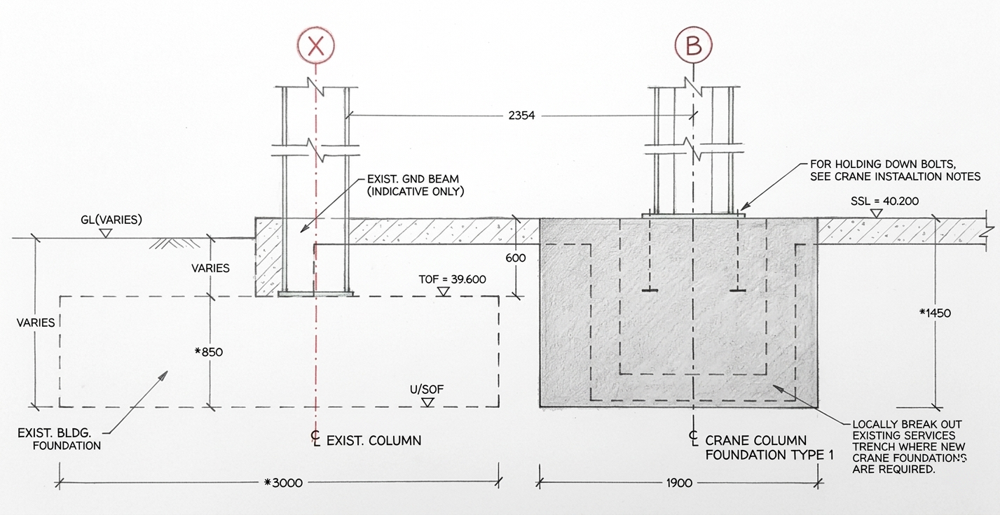
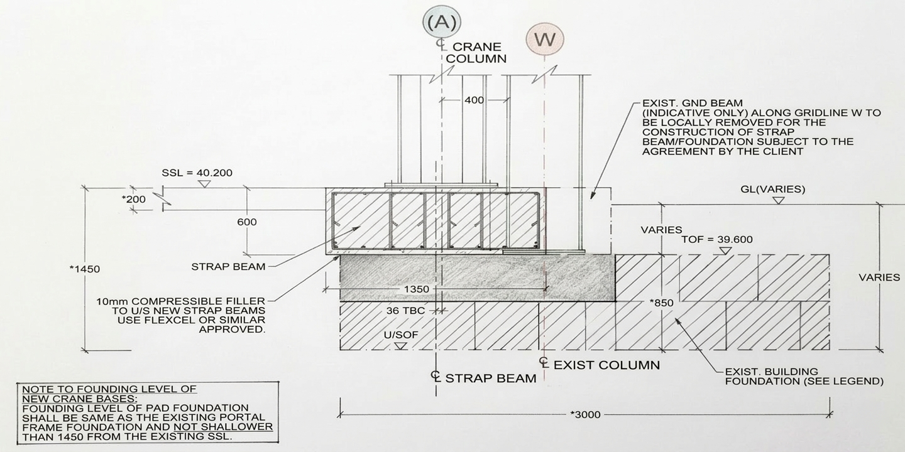
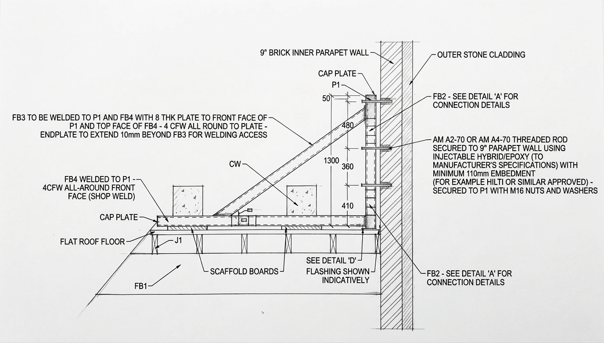
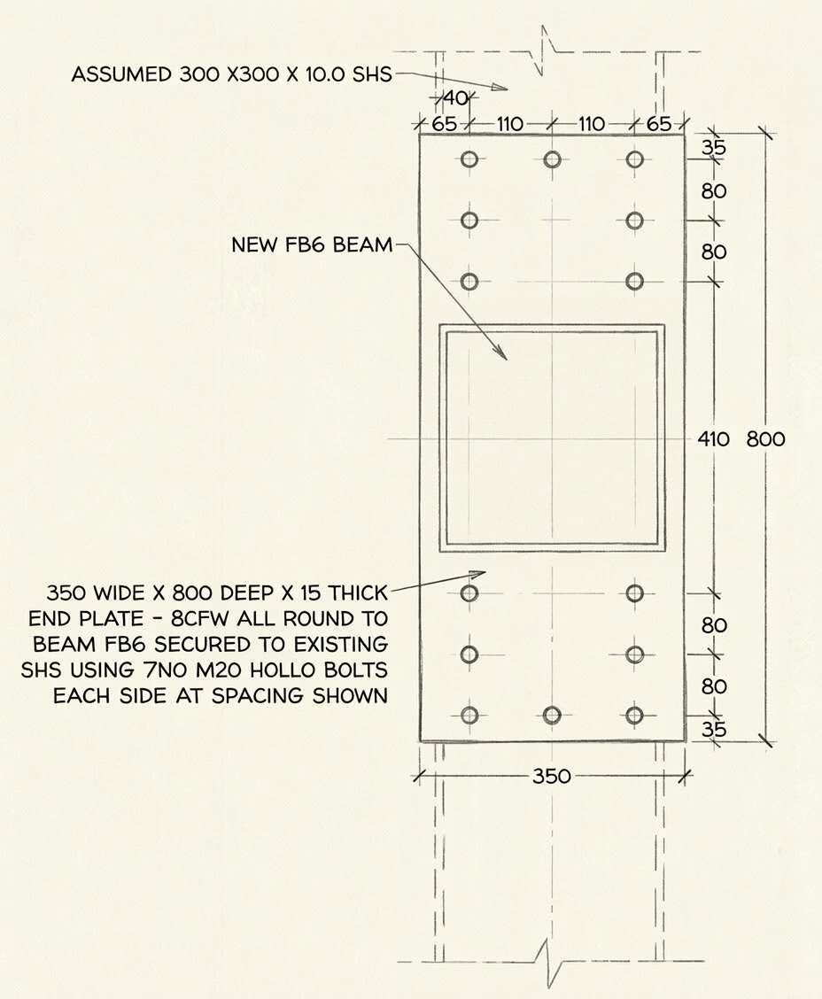
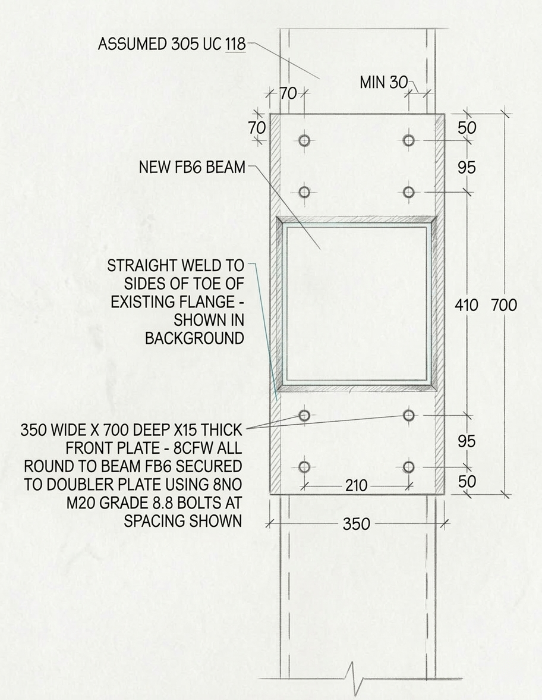
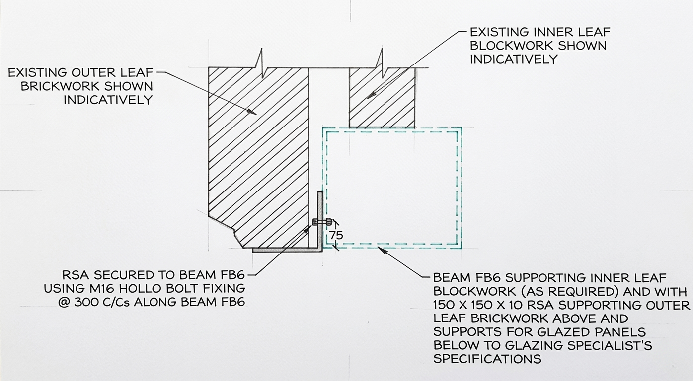
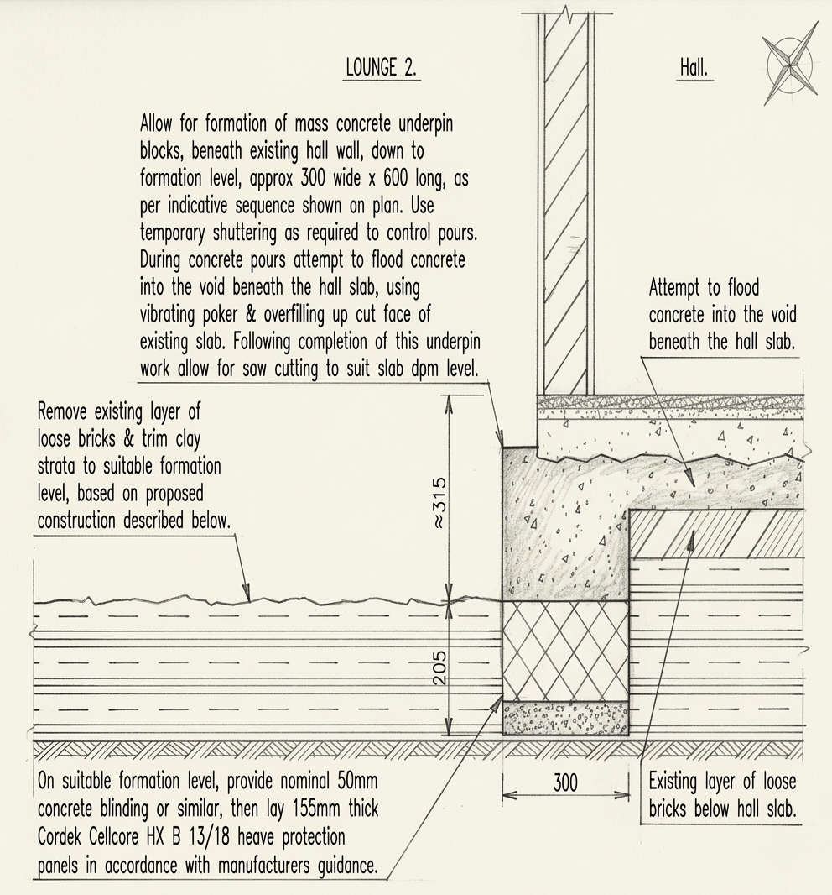

University of Leeds, UK
MSc Structural Engineering — Merit (2:1)
Civil & Structural Engineer · GMICE
Practical structural solutions for complex constraints. Designing across retail, commercial, industrial, and residential sectors throughout the UK.
SEC·01 / About Me
Civil & Structural Engineer with hands-on experience across 40+ commercial, retail, industrial, and residential projects. Focused on catching design issues before they reach site and finding solutions that work within real constraints — budget, access, programme.
Competent in Eurocodes and British Standards with practical exposure to SER certification. Technical work spans reinforced concrete, structural steelwork, timber, and composite floor systems — from connection design to foundation engineering.
Before moving to the UK, I spent two years on water and wastewater infrastructure in India, Bangladesh, and Malaysia, including structural design for treatment plants, procurement for a US$11.45M Petronas ETP, and site supervision of a 178.3 MLD WTP with zero safety incidents across 150,000+ man-hours.
MSc Structural Engineering — Merit (2:1)
BE Civil Engineering — CGPA 7.96
SEC·02 / Experience
Civil & Structural Engineer · Feb 2026 — Present
Graduate Structural Engineer · Nov 2024 — Jan 2026
Engineer – Design (Civil) · Feb 2023 — Aug 2023
Civil Engineer Trainee · Aug 2021 — Jan 2023
Engineering Internships · 2018 — 2021
SEC·03 / Projects
Select a project to unroll the detail.
Existing foundation and plinth ran close to proposed crane column positions, creating eccentric loading conditions that varied along the building length.
My Contribution

No drilling or mechanical fixings permitted through the roof. Existing waterproofing meant any penetration would cause leakage.
My Contribution
Existing blockwork infill panels being replaced with full-height glazing. Diagonal cross-bracing providing lateral stability conflicted with the new layout.
My Contribution


Tree removal had altered the moisture regime in shrinkable clay, creating both immediate subsidence and future heave risk.
My Contribution
Social housing providers face increasing regulatory pressure under Awaab’s Law to respond quickly and systematically to defect reports, with full audit trails and evidence management.
Skills DemonstratedScroll to move sideways
SEC·05 / Academic
Uncertainty quantification for complex civil infrastructure systems subject to seismic loads.
Research detailFeasibility study and detailed structural design for the proposed Leeds HS2 train station.
Project detailSEC·06 / Innovation
Digital workflows and automation systems developed to improve practice efficiency.
Designed and implemented an automated workflow for generating scope of works documents and fee proposals, using a structured knowledge base to ensure consistency and reduce preparation time significantly.
Designed and built a searchable knowledge base covering technical documentation, standard details, and project precedents — enabling rapid retrieval of relevant information when preparing calculations, reports, and design packages.
Designed and implemented a reference numbering and tracking system for managing projects and clients, ensuring consistent records and easy retrieval of project information.
Digital workflows for social housing defect management, applying AI and modern development practices to compliance-driven processes under Awaab's Law.
Skills applied: AI/ML integration, full-stack web development, database architecture, API integration, and regulatory compliance mapping.
Engineering Principle: AI supports data capture and prioritisation — all technical decisions remain under professional engineer control.
SEC·07 / Contact
Feel free to reach out via email or LinkedIn.